Modelling 3D Objects
Laser Cut Cube
In this lesson we tried making a laser cut cube. This cube is made out of 6 laser cut panels that can interlock with each other.
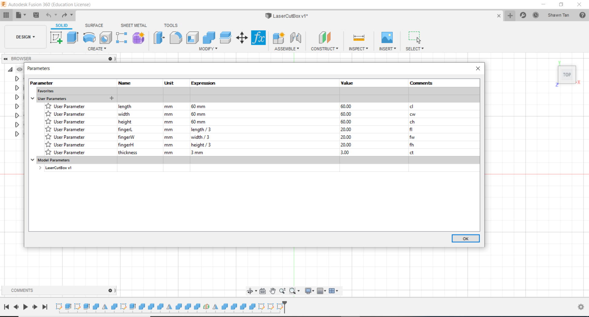The first thing we did was to set up some parameters. This will help further down the line when we need to modify a dimension(e.g length), we do need to go to each individual dimension to retype it. All we need to do is to go to the parameters page and change the langth parameters. All dimensions assosiated with the length parameters will change because of it.
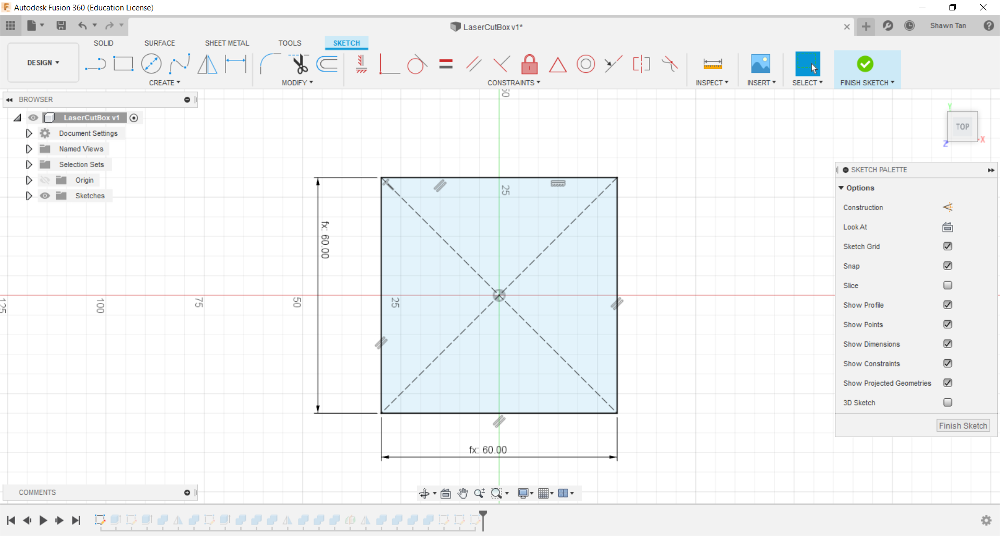In this next image I created a sketch of a centre point rectangle. I dimensioned it using the parameters length and width
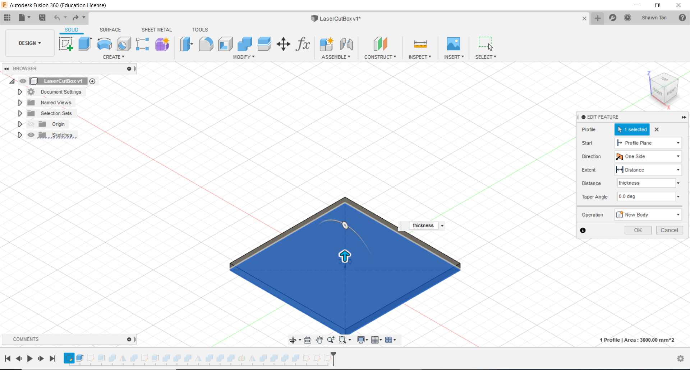The next thing I did was to extrude it. Again I used the parameters to help me (thickness was used this time).
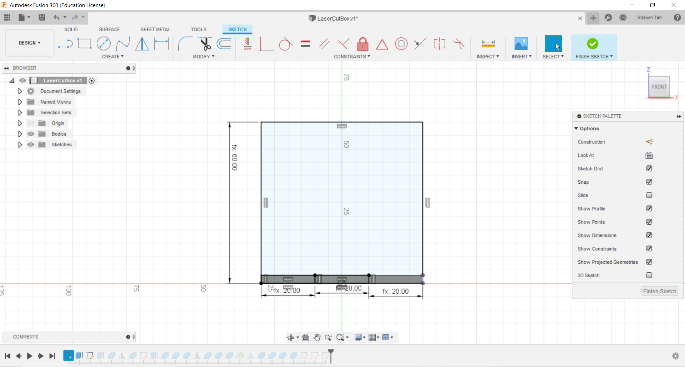I then created a sketch of a 2 point rectangle on the front surface, anchoring it at the bottom left corner. I used the parameters width and height here. To create the interlocking fingers, I used the parameters thickness and fw.
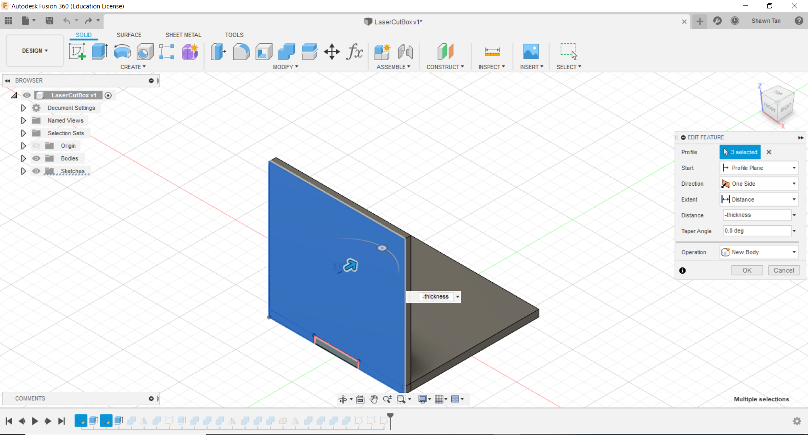After that, I extruded the selected profile. However instead of just joining or cutting like we usually do, we used a function called "New Body".
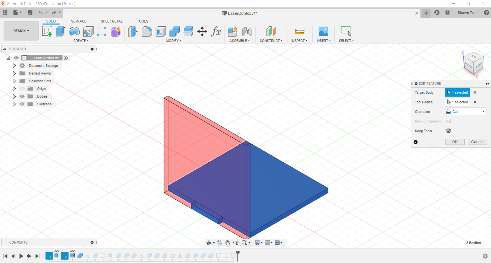Next, I clicked on the newly created body and used a new function "combine". I used a tool within it to cut any parts that intersect with it. However this fuction allows you to select multiple bodies as cutting tools but only 1 target, thus to cut multiple targets, this process must be repeated
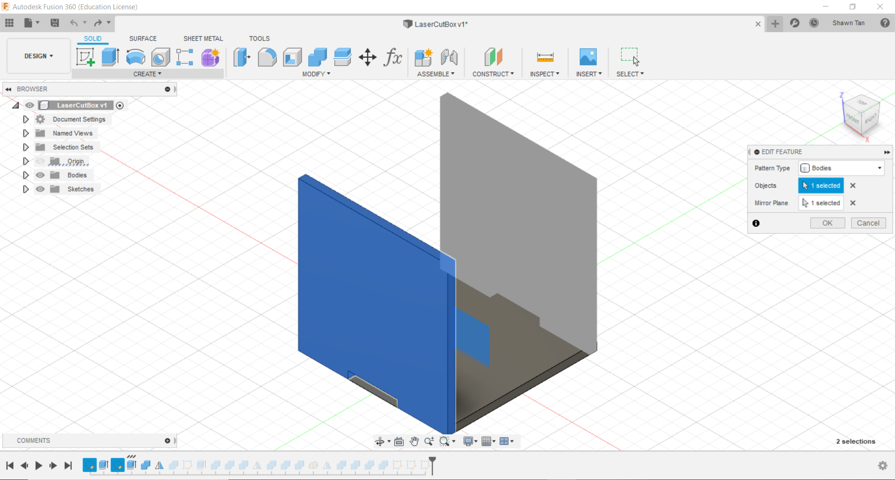In this next image, I mirrored the new body, which I shall now call front to reduce confusion, across the XZ plane to create another new body, called back.
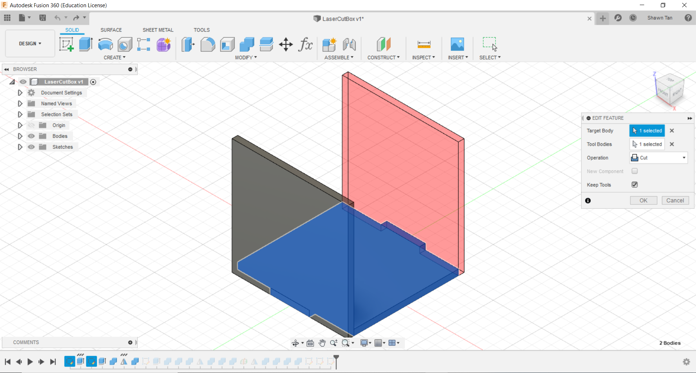I repeated the combine process to remove the intersecting portions.
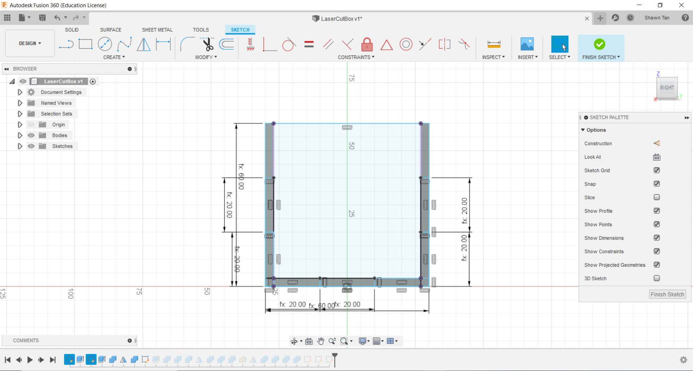I created a new sketch on the right side. I started by creating a 2 point rectangle, achoring it to the bottom left corner. I dimensioned it with parameters length and height. I then made a project geometry of the inside of the cube to allow me to easily connect the 2 point rectangles for the fingers to it.
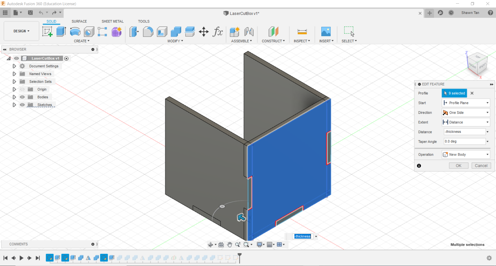I then extruded the sketch to create a new body.
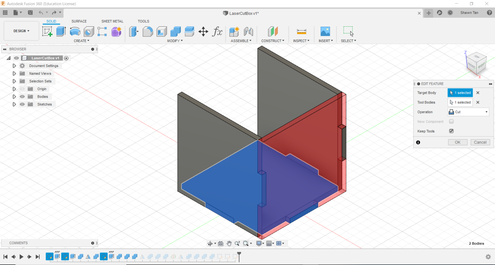I used the combine cut process in each of the three faces.
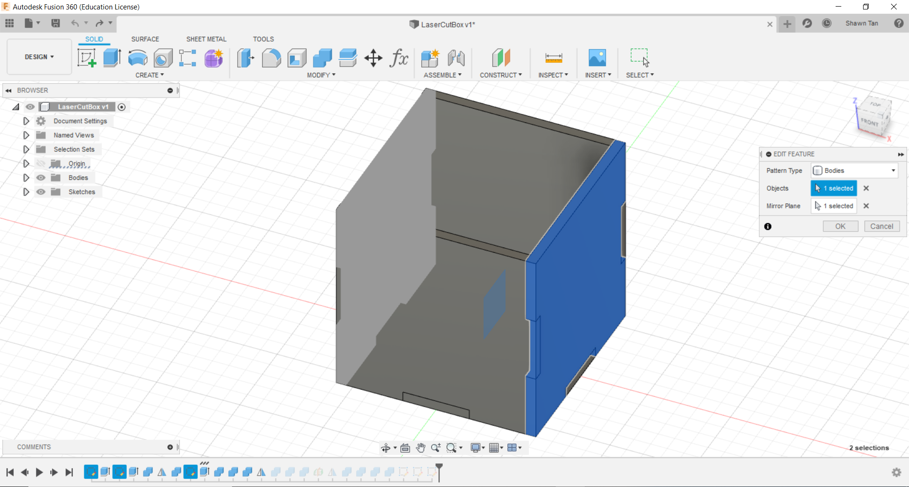I then mirrored The right body across the YZ plane...
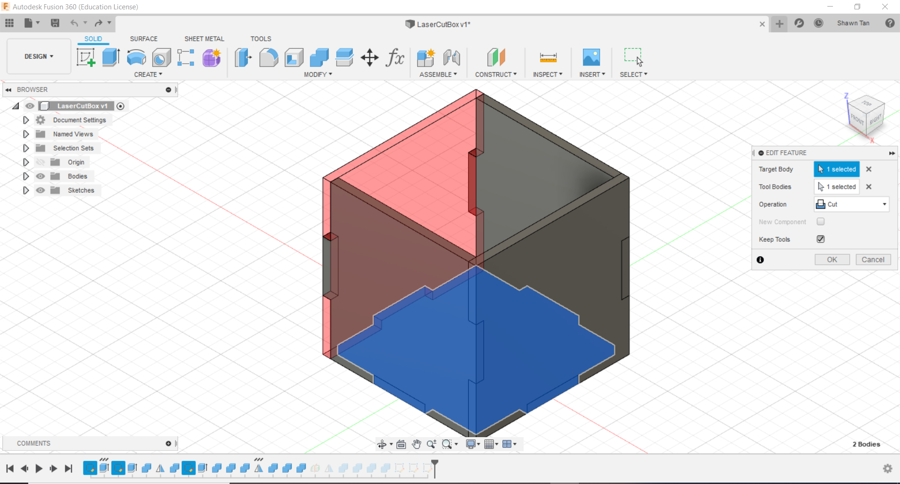...and repeated the combine cut process.
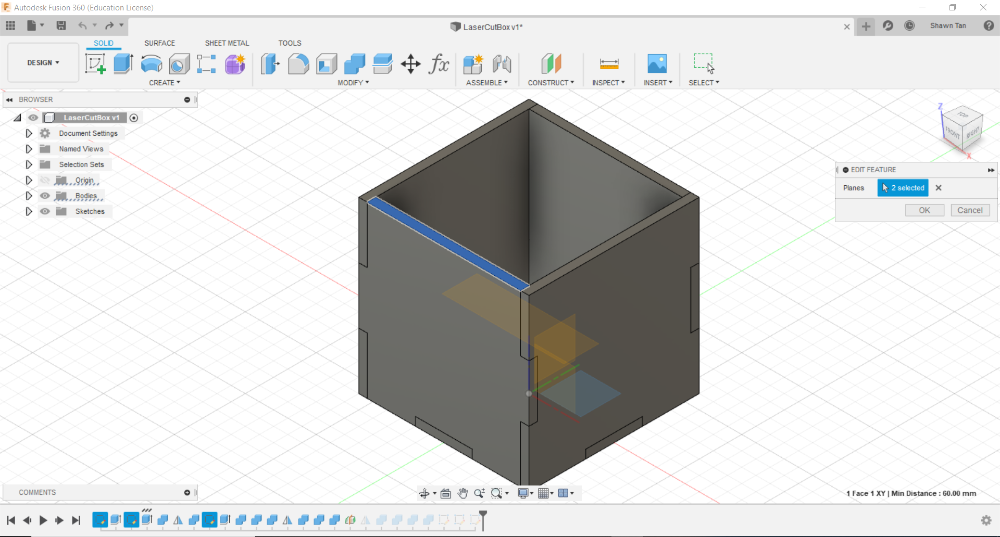I then created a midplane between the bottom and top faces...
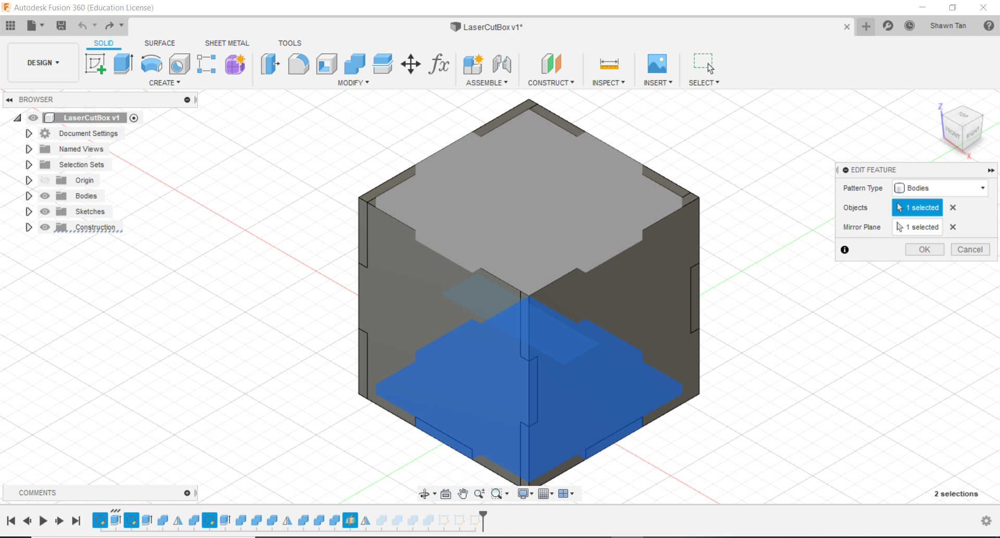...and mirrored my bottom body, which was my first body, across it.
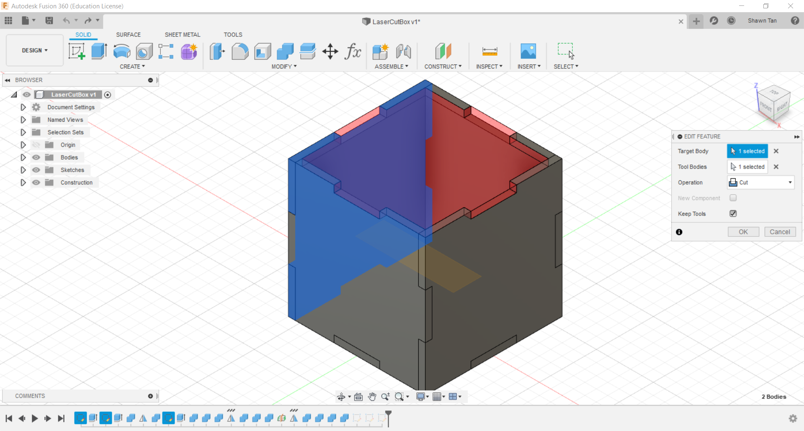I then used the combine cut function to remove the intersections from the front, left, back, and right face.
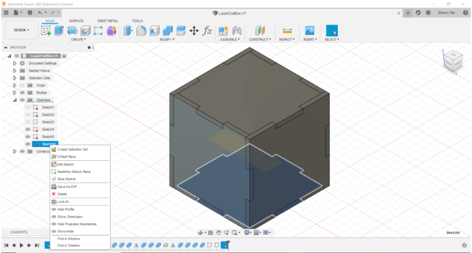In this image above, sorry for the poor quality btw, I created new sketches for the front, left and bottom faces. In sketch mode I selected the entire profile and finished sketch. For all 3 sketches I saved it as DXF file format.
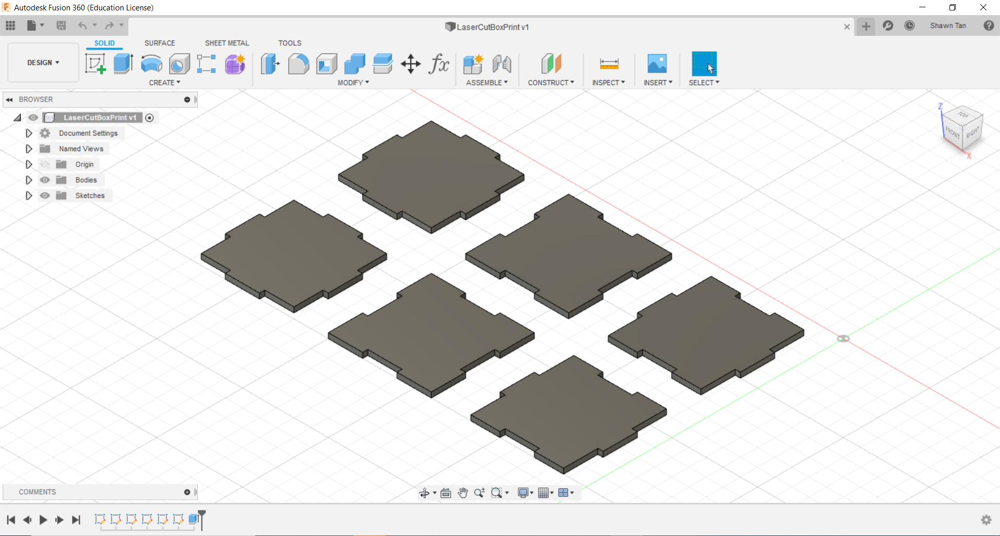I then imported the 3 DXF files into a new Fusion 360 file. I repeated this a second time so that I will end up with 2 of each piece. I then extruded them by 3mm, which is the thickness from the parameters in the other file.